・ハンマリングオン
・プリング
・ゴーストノート
見た目はエレキギターに似ていますが、弦が太くて長く、より低い音を出します。つまり、メロディーをガンガン弾くというよりは、曲全体や他の楽器を引き立てる「縁の下の力持ち」です。しかし、曲のカッコよさを決めるとても大切なパートです。また、4つの弦を持つベースが一般的ですが、5つ以上の弦を持つ多元ベースなども存在します。
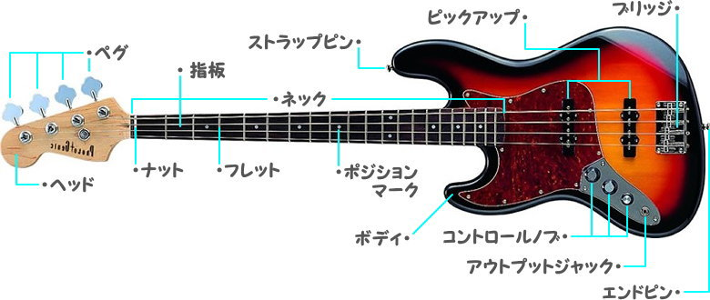
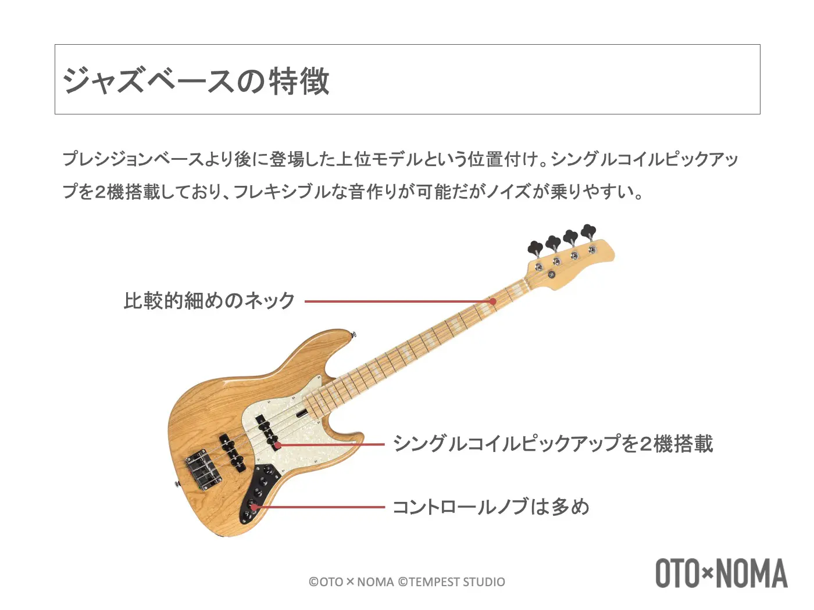
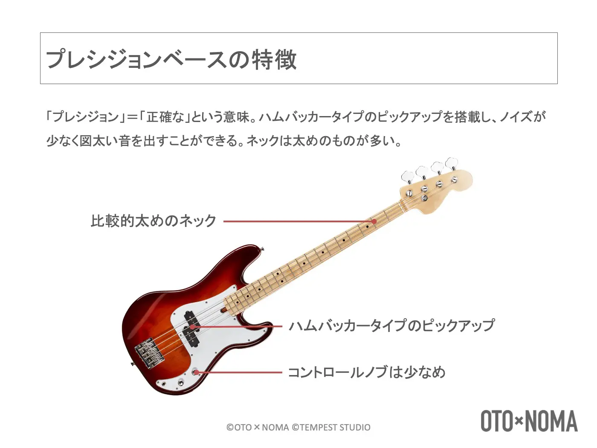
| 比較項目 | プレシジョンベース | ジャズベース |
|---|---|---|
| ピックアップ構造 | スプリットコイル | シングルコイル |
| 音の特徴 | 重厚でパンチのある低音 | クリアで明るい音色 |
| ネックの太さ | 太め | 細め |
| 演奏スタイル | ロック、パンク、ソウル | 幅広い音楽 |
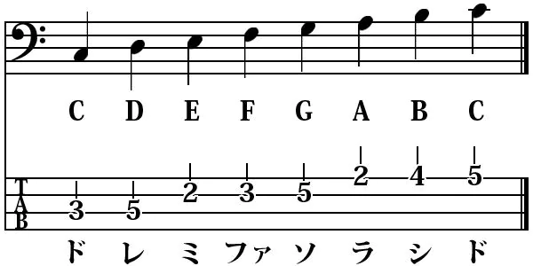
上の図のように、4つの線（4弦ベースの場合）をベースの弦に見立てて、押さえるフレットの数字を配置した楽譜です。 一番上の線が1弦（一番細い弦/高音）、一番下の線が4弦（一番太い弦/低音）で、左から右に読んでいきます。
・ハンマリング・オン
ハンマリング・オンは、右手で弦を弾かずに（ピッキングせずに）、左手の指で弦をフレットに叩きつけて新しい音を出すテクニックです。1回弾くだけで2つの音を滑らかにつなげることができます。
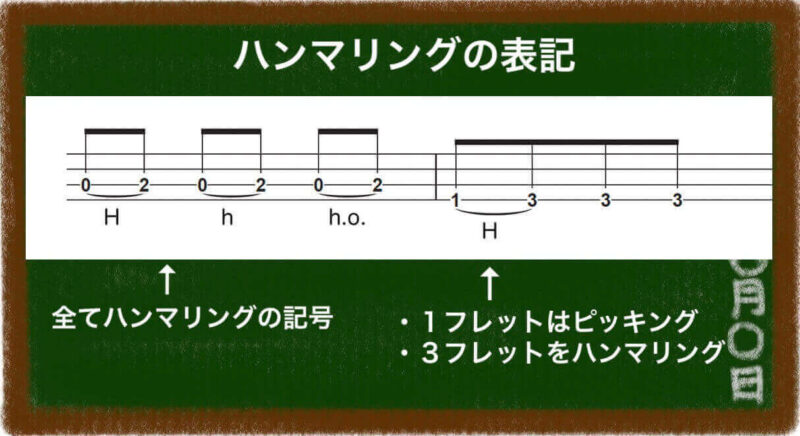
譜面上では、上の図のように表示されます。
・プリング・オフ
プリング・オフは、右手でピッキングをせずに、弦を押さえている左手の指で弦を引っかくようにして低い音を鳴らすテクニックです。アタック音なしで、滑らかな高速プレイができるのが特徴です。
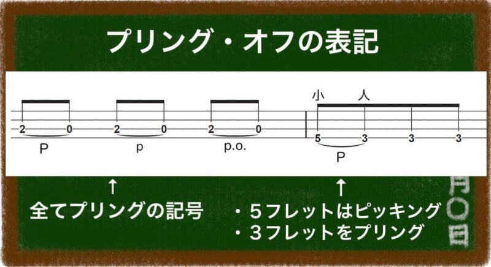
譜面上では、上の図のように表示されます。
・ゴーストノート
ベースのゴーストノートとは、左手で弦を軽く触れてミュートし、音程感のない「パッ」「ツッ」という短い打楽器のようなアタック音を鳴らすテクニックです。リズム感を強調し、演奏に躍動感を与える効果があります。
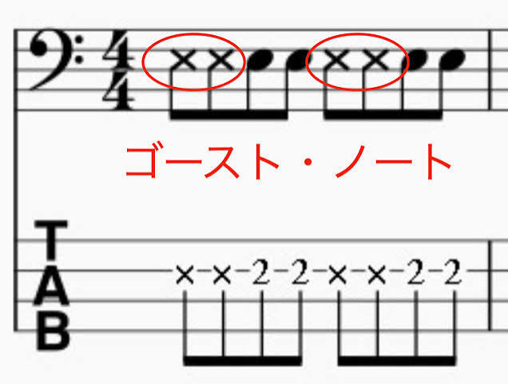
譜面上では、上の図のように表示されます。
ピック弾きは、硬いアタック感と明確な音の粒立ち（音ヌケの良さ）が特徴の奏法で、ロックやパンクなど、疾走感のあるリズムを正確に刻むのに最適です。
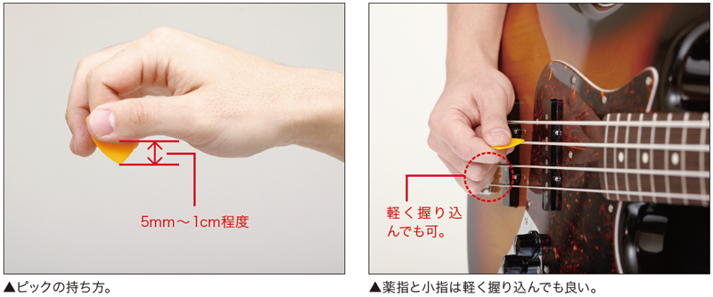
上の図のように、ピックを人差し指の側面（第一関節あたり）にピックを乗せ、上から親指の腹でカギ十字を作るように固定するのが最も一般的です。
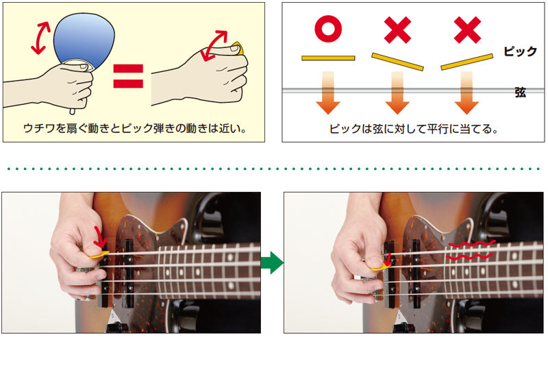
弦に対してピックの面をできるだけ平行に当て、打楽器を叩くように、手首を柔らかく使って「シュッ」と素早く弦を通過させます。
親指をピックアップや上の弦に置き、指の腹から先端で弦を捉えて、指板に対して平行（横方向）に振動させるようにはじく奏法です。温かく丸みのある太い音色が出せるほか、音のニュアンスを繊細に変えやすいという特徴があります。
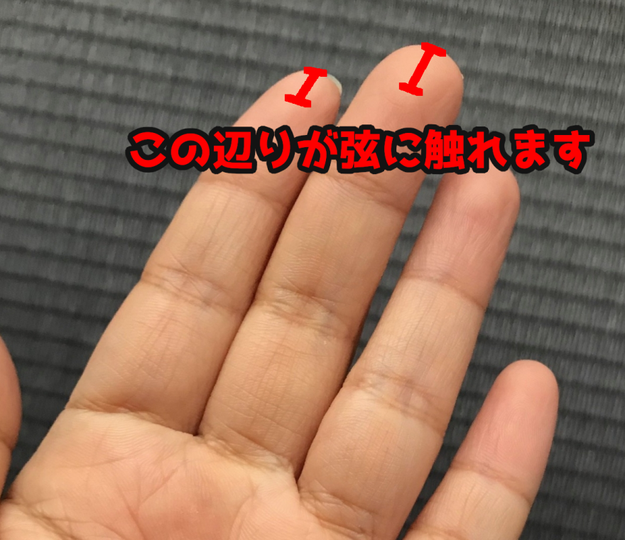
コツは、指を入れ込みすぎずに上の図のあたりで引くことが重要です。また、撫でるようにやさしく弾いたり、つまむように強く弾いたりすることで音の印象を変えることができるので曲に合わせて変えることが大切です。
スラップの動きは、弦を叩く「サムピング」と弦を引っ張る「プル」の二つに分けられ、パーカッシブでキレのある派手なサウンドが最大の特長である奏法です。
弦を叩く「サムピング」は、弦を親指の外側のでっぱってるところで叩いて音をだします。コツは手のひらを上向きから下向きにするように勢いよく手を返すことが大切です。
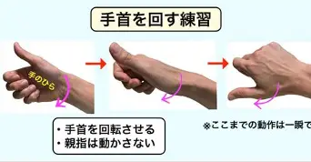
弦を引っ張る「プル」は、人差し指や中指を使って手のひらが下向きの状態から上向きにするように勢いよく手を返す時の力を利用して弦をはじきます。コツは指引きと同じように指を入れ込みすぎないようにすることです。
.jpg)
スラップはこの動きを繰り返すことで素早い演奏が可能になります。
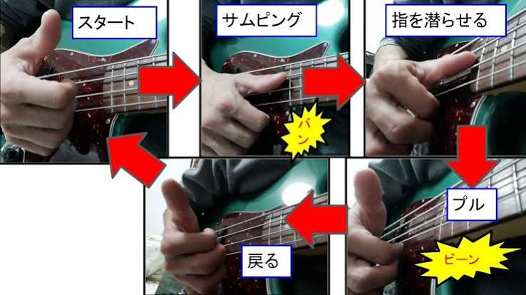
ベースの弦は、太めなので押さえきれないことが多いです。なので、フレットの近くを少し斜めにした指で押さえるようにしましょう。指を斜めにするのまっすぐ押さえるよりも面積が大きくなり押さえやすくなります。
.jpg)
実用性はあまり高くはないですが、思ったとおりに指を動かす練習や小指などの力が入りにくい指のトレーニングになるのでおすすめです。
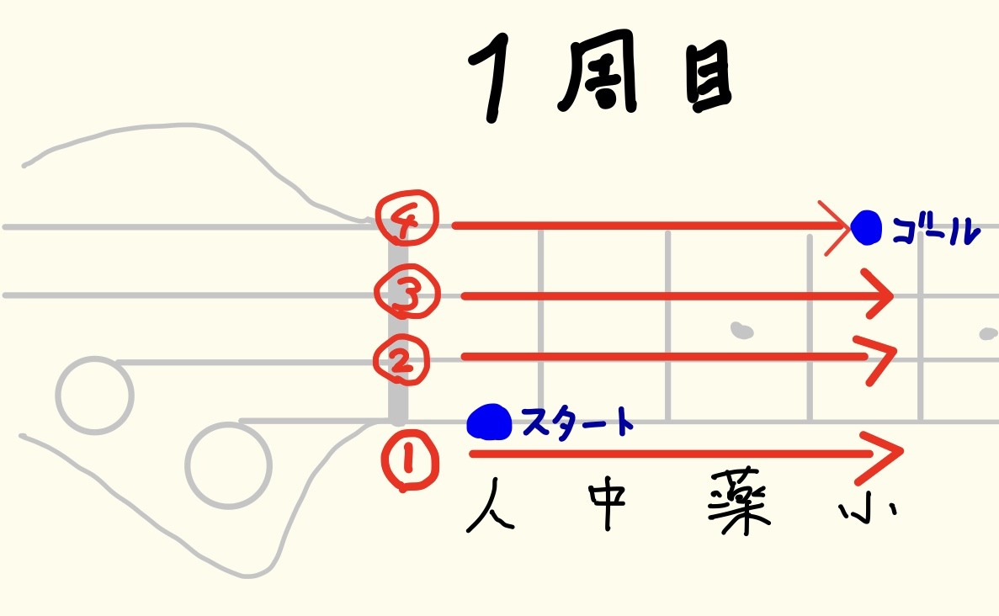
最初は恥ずかしいかもしれませんが、ベースはリズムが命です。なので、リズムをつかむために「ボ」や「パラ」、「ツカ」などで声に出していきましょう。
現代は、便利なものでインターネットでバチバチにうまいベーシストたちが解説してくれています。それらの動画を活用していきましょう。
わかりやすいと思ったクリエイター↓
おすすめのYoutubereの「【ムツミ】Mutumi」さんへのリンク
2026年8月21日 吉田 恵汰